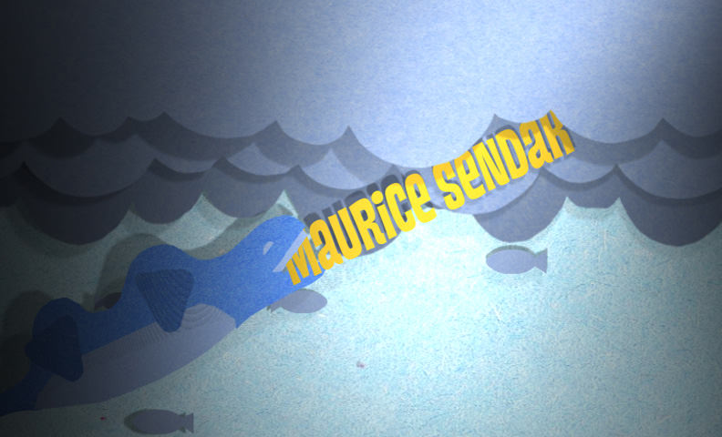

I wanted to make a title sequence that felt imaginative, just like the main character. This sequence tells the story of what happens the journey to the island.

This project was completed for a SCAD broadcast design course. The objective was to design our interpretation of the "Where the Wild Things Are" title sequence. My concept was to show the adventure that happens while in the boat on the way to the island using a shadow box like a child would make.